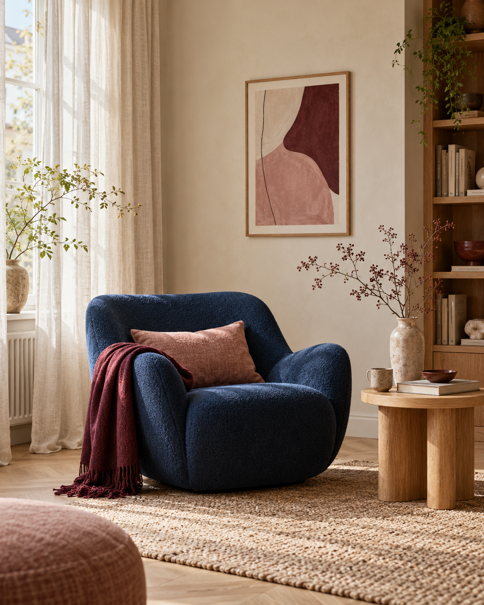

STILSTARTAREN
Hitta din stil och skapa en röd tråd i hemmet.
Tycker du om många olika inredningsstilar men har svårt att få ihop dem till en helhet? Eller vet du ungefär vad du gillar, men känner dig osäker när du ska välja färger, material och möbler?
Boka Stilstartaren ↗3 995 kr inklusive moms

Med Stilstartaren hjälper jag dig att förstå vad du faktiskt trivs med hemma. Utifrån din smak, din vardag och dina behov skapar jag en personlig stilguide som ger dig en tydlig riktning för hela hemmet.
Du får något att hålla dig till när du inreder vidare – utan att behöva börja om eller ifrågasätta varje nytt val.
EN RIKTNING SOM KÄNNS SOM DU
Känner du
igen dig?
Du kanske sparar massor av inspirationsbilder men har svårt att se vad de har gemensamt. Du tycker om flera olika uttryck och vet inte riktigt hur du ska kombinera dem. Eller så har du redan möbler och saker du gillar, men saknar en röd tråd som får allt att kännas genomtänkt.
Stilstartaren passar dig som vill förstå din egen stil bättre och känna dig tryggare i dina inredningsbeslut.
Det handlar inte om att sätta en etikett på din stil eller följa en viss trend. Det handlar om att hitta det som passar just dig.
FRÅN INSPIRATION TILL PERSONLIG STILGUIDE
Så går det till
Du berättar om dig och ditt hem
Du fyller i ett behovs- och stilformulär där du berättar om din smak, din vardag, vad du tycker om och hur du vill att ditt hem ska kännas. Du skickar också 8–12 inspirationsbilder på interiörer du gillar, och gärna några exempel på sådant du inte tycker om.
Jag analyserar och vi pratar vidare
Jag går igenom dina svar och inspirationsbilder för att hitta återkommande mönster och förstå vad som är viktigt för dig. Därefter har vi ett digitalt fördjupningssamtal på 30 minuter där vi reder ut sådant som behöver förtydligas.
Jag skapar din personliga stilguide
Jag sammanställer analysen till en visuell och tydlig guide med en stilriktning som utgår från dig, ditt hem och hur du vill leva.
Du får din stilguide
Jag skickar den färdiga guiden till dig via e-post som en PDF. Under sju kalenderdagar efter leveransen kan du ställa korta frågor om innehållet om något behöver förtydligas.
DIN PERSONLIGA STILGUIDE
Det här
får du.
Resultatet är en personlig stilguide som hjälper dig att se den röda tråden i din inredningsstil och göra mer genomtänkta val framöver.
Stilguiden innehåller:
- En personlig stilanalys som beskriver din stil och vad som kännetecknar den.
- En moodboard som visar den övergripande känslan och stilriktningen.
- En färgpalett med förslag på bas-, sekundär- och accentfärger.
- Riktning för material, strukturer, former och möbeluttryck.
- Inspiration kring textilier, mönster, dekoration och belysning.
- Din röda tråd: 5–7 personliga principer som hjälper dig att göra egna inredningsval framöver.
Stilguiden är tänkt att vara ett stöd som du kan återvända till när du vill förändra, komplettera eller utveckla ditt hem.
GENOMTÄNKTA VAL ÖVER TID
Ett hem som passar dig – även på längre sikt.
När du blir tydligare med vad du faktiskt tycker om blir det också lättare att göra genomtänkta val.
Du kan ta vara på sådant du redan äger, undvika inköp som inte riktigt passar och bygga vidare på en stil som fungerar för dig över tid.
Målet är inte att allt i hemmet ska matcha perfekt. Det är att du ska förstå hur du kan kombinera det du gillar till en personlig helhet.
PRIS OCH LEVERANS
Stilstartaren
3 995 kr inklusive moms
I priset ingår personlig stilanalys, ett digitalt fördjupningssamtal på 30 minuter och din färdiga stilguide i PDF-format.
Leveranstiden är cirka 10–14 arbetsdagar från det att jag har fått ditt kompletta underlag och vi har genomfört samtalet.
Redo att hitta
din röda tråd?
Du behöver inte veta exakt vilken stil du har innan du börjar. Det är ju det vi ska ta reda på tillsammans.
Boka Stilstartaren
Skicka en bokningsförfrågan
Mejla din förfrågan till hej@heminredningscoachen.se. Jannika återkommer med nästa steg.
Klistra in texten i ditt mejl och skicka till adressen ovan. Förfrågan skickas inte automatiskt från sidan.
Stilstartaren ger dig en övergripande riktning för hemmet. Den innehåller inte möbleringsritningar, exakta färgkoder eller konkreta produktrekommendationer. Behöver du hjälp att inreda ett specifikt rum mer i detalj kan Rum för Rum Makeover vara ett bättre alternativ.